01.
Branding — wenn deine Marke
nicht aussieht wie das, was du leistest.
Vom Markenfundament bis zur ersten konsistenten Anwendung. Als Projekt mit Anfang, Mitte und sauberer Übergabe.
Was du bekommst
- ✦Markenfundament: Positionierung, Tonalität, Werteversprechen — schriftlich
- ✦Visuelle Identität: Logo, Schrift-System, Farben, Bildwelten
- ✦Anwendungs-Guidelines: Wie nutze ich was, wann, wo
- ✦Erste Touchpoints: Website-Basis, Visitenkarte, Vorlagen-Set
- ✦Übergabe + 30 Tage Sparring
Was du nicht bekommst
- ×Logo-Refresh in 3 Tagen
- ×80-Seiten-Strategie-Deck zum Selber-Anwenden
- ×Vorlage-Designs aus dem Werkstatt-Archiv
- ×Versprechen, dass Branding allein Umsatz bringt
- ×Nachverhandeln auf 50 % Brand-Tiefe für 50 % Preis
So gehen wir vor
1
Klarheit-Workshop
1–2 Tage mit dir
2
Markenfundament
ca. 2 Wochen
3
Visuelle Identität
ca. 3–4 Wochen
4
Anwendung & Guidelines
ca. 1–2 Wochen
5
Übergabe + Sparring
30 Tage After-Care
Realistische Dauer
6 bis 10 Wochen, je nach Brand-Tiefe und Anwendungs-Breite. Schneller geht immer — aber dann auf Kosten der Substanz, und das machen wir nicht.
03.
Print, Objekt & Workwear — wenn deine Marke
in der Hand landet und am Körper getragen wird.
Die Marke wird greifbar: Visitenkarten, Broschüren, Verpackungen, Geschenkboxen — und Workwear für dein Team. Alles gestaltet, alles produktionsfertig, mit Druck- und Textil-Partnern koordiniert.
Was du bekommst
- ✦Visitenkarten & Briefpapier & Envelopes im Marken-System
- ✦Flyer, Broschüren, Editionen (bis A4, bis 16 Seiten)
- ✦Verpackungen & Geschenkboxen — inkl. Prototyp-Koordination
- ✦Aufsteller, Info-Karten, Empfangs-Materialien
- ✦Workwear für dein Team: Polos, T-Shirts, Kasacks, Hoodies, Caps — Stick oder Druck, Textil-Partner koordiniert
- ✦Reinzeichnung + Druck-Koordination bei unseren Partner-Druckereien
Was du nicht bekommst
- ×Massen-Werbeflyer für Direktmarketing-Kampagnen
- ×Kataloge über 16 Seiten (dafür braucht's einen Spezialisten)
- ×Messebau, Roll-ups im Standard-Look, Wartezimmer-TV
- ×Massen-Merch-Produktion für Giveaways (500 Beutel für den nächsten Tag der offenen Tür — dafür braucht's einen reinen Textil-Händler)
- ×Reine Druck-Auftragsabwicklung ohne Design-Anteil
So gehen wir vor
1
Print-Briefing
1 Termin, wenn Marke steht
2
Konzept + Muster
2–3 Wochen
3
Reinzeichnung + Andruck
1–2 Wochen
4
Druck + Auslieferung
Partner-Termin
Range
Ab 2.500 € netto für ein Print-Basispaket (Visitenkarten + Briefpapier im bestehenden Marken-System). Größere Sets mit Broschüre, Verpackung oder Workwear-Serie typisch 4.500–9.500 €. Reine Druck- und Textil-Kosten separat und transparent — wir arbeiten ohne Marge auf Druck oder Textilien. Als Add-on zum Branding-Paket –20 %, weil Marken-System schon steht.

Social — wenn du sichtbar sein willst,
ohne zur Content-Maschine zu werden.
Laufende Betreuung deiner Social-Kanäle mit Strategie, Plan, Produktion, Paid Ads und ehrlichem Reporting. Du gibst die Richtung — wir die Hände.
Was du bekommst
Was du nicht bekommst
So gehen wir vor